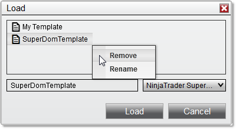

|
<< Click to Display Table of Contents >> SuperDOM Templates |


|
SuperDOM Templates
|
<< Click to Display Table of Contents >> SuperDOM Templates |
|
SuperDOM templates allow you to save a variety of visual and functional properties for the SuperDOM, allowing you to quickly recall these settings at a later time.
 How to save a SuperDOM Template
How to save a SuperDOM Template
A SuperDOM Template can be applied to a new or previously opened SuperDOM to load customized settings, including any additional columns saved as part of the template.
Saving a SuperDOM TemplateTo save a SuperDOM Template: 1.Once you have a SuperDOM set up to your liking, right mouse click within the window and select the menu item Templates, followed by Save As 2.The Save As window will appear. Enter a name for your template and press the save button.
Changing the Default SuperDOM TemplateA SuperDOM Template can be saved as the default used for all new SuperDOM windows. Once saved, the default template will determine the properties of each new SuperDOM opened, unless you specify a different template.
To save a SuperDOM Template as default: 1.Right mouse click within an open chart and select the Templates menu 2.Select the menu item Save as Default
In the image below, we are saving a new chart template named "My Template."
|
 How to load, remove, or rename a SuperDOM Template
How to load, remove, or rename a SuperDOM Template
Loading a SuperDOM TemplateA SuperDOM Template that was previously saved can be loaded on any SuperDOM window.
To load a SuperDOM Template:
1.Right mouse click and select the menu item Templates followed by the Load menu item 2.The Load window will appear. Select the template to load from the list of templates, then press the Load button.
Removing a SuperDOM TemplateTo remove a SuperDOM Template from the list of saved templates: 1.Right mouse click within a chart and select the menu item Templates followed by either the Save As or Load menu items 2.The Save or Load window will appear, depending on which menu item you selected. Right mouse click the template for removal from the list of templates, then select the Remove menu item.
Renaming a SuperDOM TemplateTo rename an existing SuperDOM Template from the list of saved templates: 3.Right mouse click within a chart and select the menu item Templates followed by either the Save As or Load menu items 4.The Save or Load window will appear, depending on which menu item you selected. Right mouse click the template from the list of templates, then select the Rename menu item.
In the image below, we can either remove or rename the selected SuperDOM Template.
 |